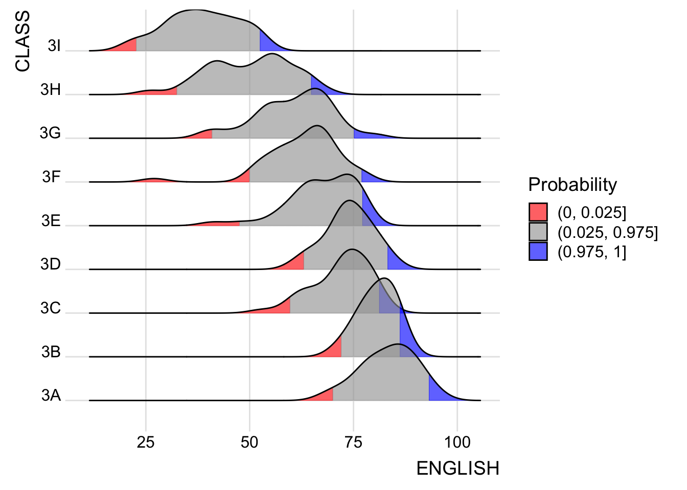

pacman::p_load(ggdist, ggridges, ggthemes, colorspace, tidyverse)Hands-on Exercise 4a: Visualising Distribution
Overview
in this hands on exercise, we are going to explore a new statistical graphic method for visualising distribution: ridgeline and raincloud plot by ggplot2 extenstions
Getting started
Intall and Load packages
ggridges: ggplot2 extension to plot ridgeline
ggdist: to visualise distribution and uncertainty
Importing data
exam <- read_csv('data/Exam_data.csv')Visualising distribution with ridgeline
ridgeline plot also commonly called by joyplot. it is to visualise numeric value distribution of several groups.
it is usually used to plot distribution across medium to high number of group (more than 5)
ggridges method
there are 2 geom plot :
geom_ridgeline(): to draw the height values directly to the ridgelinegeom_density_ridges(): i take estimates to draw the distribution plot
here are plot using geom density ridges:
ggplot(data = exam,
aes(x = ENGLISH,
y = CLASS)) +
geom_density_ridges(
scale = 3,
rel_min_height = 0.01,
bandwidth = 3.4,
fill = lighten("#7097BB", .3),
color = "white"
) +
scale_x_continuous(
name = "English grades",
expand = c(0,0)
) +
scale_y_discrete(NULL, expand = expansion(add = c(0.2,2.6))) +
theme_ridges()
varying fill color among x axis
using the geom_ridgeline_gradient() or geom_density_ridges_gradient()
ggplot(data = exam,
aes(x = ENGLISH,
y = CLASS,
fill = stat(x))) +
geom_density_ridges_gradient(
scale = 3,
rel_min_height = 0.01
) +
scale_fill_viridis_c(name = "Temp. [F]",
option = "C") +
scale_x_continuous(
name = "English grades",
expand = c(0,0)
) +
scale_y_discrete(NULL, expand = expansion(add = c(0.2,2.6))) +
theme_ridges()
mapping probability to the color
using stat_density_ridges()
ggplot(data = exam,
aes(x = ENGLISH,
y = CLASS,
fill = 0.5 - abs(0.5-stat(ecdf)))) +
stat_density_ridges(geom = "density_ridges_gradient",
calc_ecdf = TRUE) +
scale_fill_viridis_c(name = "Tail probability",
direction = -1) +
theme_ridges()
adding quantile lines
using geom_density_ridges_gradient() and stat(quantile)
ggplot(exam,
aes(x = ENGLISH,
y = CLASS,
fill = factor(stat(quantile))
)) +
stat_density_ridges(
geom = "density_ridges_gradient",
calc_ecdf = TRUE,
quantiles = 4,
quantile_lines = TRUE) +
scale_fill_viridis_d(name = "Quartiles") +
theme_ridges()
ggplot(exam,
aes(x = ENGLISH,
y = CLASS,
fill = factor(stat(quantile))
)) +
stat_density_ridges(
geom = "density_ridges_gradient",
calc_ecdf = TRUE,
quantiles = c(0.025, 0.975)
) +
scale_fill_manual(
name = "Probability",
values = c("#FF0000A0", "#A0A0A0A0", "#0000FFA0"),
labels = c("(0, 0.025]", "(0.025, 0.975]", "(0.975, 1]")
) +
theme_ridges()
we can also color it manually
Visualising distribution with raincloud
half eye graph
plot containing a half density and a slab interval
ggplot(exam,
aes(x = RACE,
y = ENGLISH)) +
stat_halfeye(adjust = 0.5,
justification = -0.2,
.width = 0,
point_colour = NA)
adding the box plot
ggplot(exam,
aes(x = RACE,
y = ENGLISH)) +
stat_halfeye(adjust = 0.5,
justification = -0.2,
.width = 0,
point_colour = NA) +
geom_boxplot(width = .20,
outlier.shape = NA)
adding the dot plots
ggplot(exam,
aes(x = RACE,
y = ENGLISH)) +
stat_halfeye(adjust = 0.5,
justification = -0.2,
.width = 0,
point_colour = NA) +
geom_boxplot(width = .20,
outlier.shape = NA) +
stat_dots(side = "left",
justification = 1.2,
binwidth = .5,
dotsize = 2)
finishing touch
using coordflip to flip the rain plot and adding theme
ggplot(exam,
aes(x = RACE,
y = ENGLISH)) +
stat_halfeye(adjust = 0.5,
justification = -0.2,
.width = 0,
point_colour = NA) +
geom_boxplot(width = .20,
outlier.shape = NA) +
stat_dots(side = "left",
justification = 1.2,
binwidth = .5,
dotsize = 1.5) +
coord_flip() +
theme_economist()